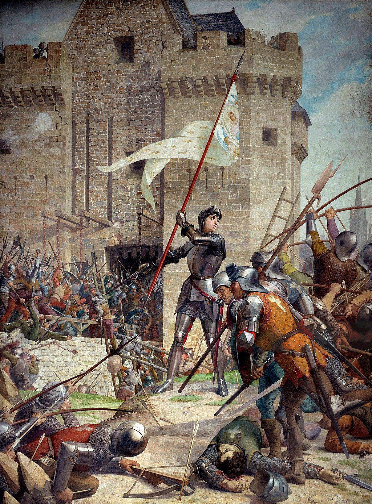
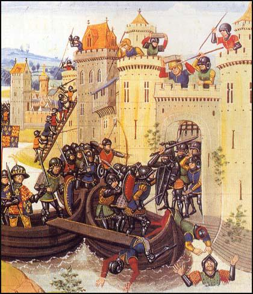
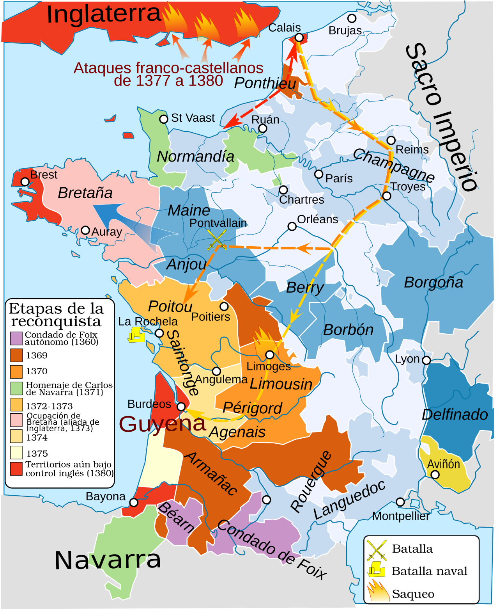
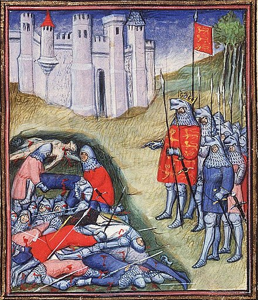
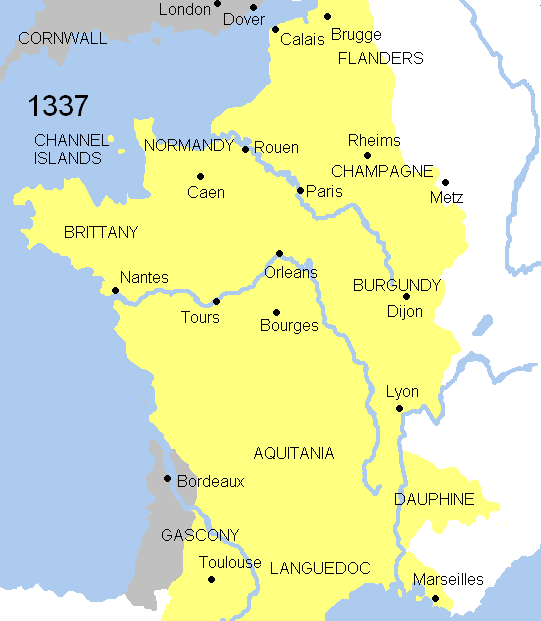
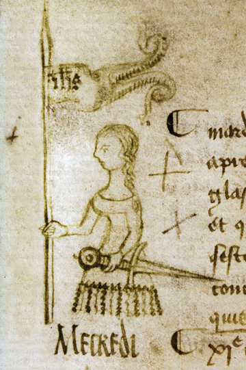
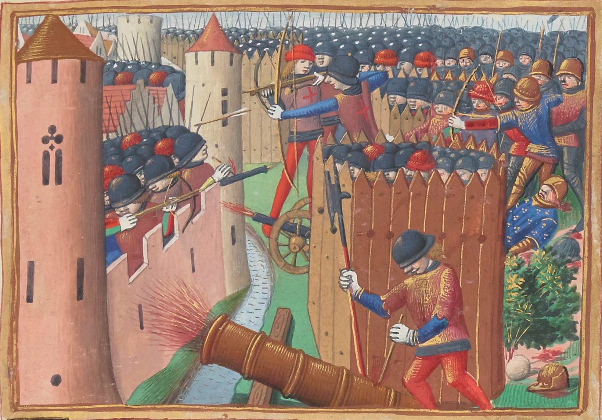

Понятие «Столетняя война» было сформулировано лишь историками XIX века и в научный оборот введено К. Демишелем в его «Хронологической таблице истории Средних веков» (1823). В 1839 году этот термин использован был в «Истории Франции» М. Боро, но лишь в 1852 году вышла книга Т. Башле под заглавием «Столетняя война» (фр. La guerre de Cent ans). Английскими авторами понятие это усвоено было ещё позже, и лишь в 1869 году известный историк-медиевист Эдуард Фримен решил назвать войну за французскую корону как The Hundred Years War.
Столетняя Война
Столетняя Война
Часть англо-французского конфликта


Жюль Эжен Леневё. Жанна д'Арк при осаде Орлеана 1429 года
- Дата — 1337—1453 (116 лет)
- Место — В основном Франция
- Итог — Победа Франции
- Изменения — Англия потеряла бо́льшую часть владений во Франции (кроме Кале)
Столе́тняя война́ (фр. Guerre de Cent Ans, англ. Hundred Years' War) — серия военных конфликтов между Королевством Англия и его союзниками, с одной стороны, и Королевством Франция и её союзниками, с другой, длившихся примерно с 1337 года по 1453 год. Поводом к этим конфликтам являлись притязания на французский престол английской королевской династии Плантагенетов, стремящейся вернуть территории на континенте, ранее принадлежавшие английским королям. Так как Плантагенеты были связаны узами родства с французской династией Капетингов, у английских королей были достаточно большие шансы заполучить французский престол. Франция, в свою очередь, стремилась вытеснить англичан из Гиени, которая была закреплена за ними Парижским договором 1259 года, и сохранить своё влияние во Фландрии. Феодалы же тех или иных государств, принимавших участие в серии военных конфликтов, желали заполучить богатства своих противников, а также славу и благородство. Несмотря на сокрушительные победы в начальных этапах, Англия так и не смогла добиться своей цели, а в результате войны на континенте у неё остался лишь порт Кале, который она удерживала до 1558 года.
Война продолжалась 116 лет (с четырьмя перерывами). Строго говоря, это была скорее серия военных конфликтов:
- 1. Эдвардианская война — в 1337—1360 годах.
- 2. Каролингская война — в 1369—1396 годах.
- 3. Ланкастерская война — в 1415—1428 годах.
- 4. Завершающий период — в 1428—1453 годах.
Начавшись с династического конфликта, война впоследствии приобрела национальный оттенок в связи с оформлением английской и французской наций. С точки зрения военного дела, в ходе войны появились новые виды оружия и военной техники, в первую очередь артиллерия, были разработаны новые тактические и стратегические приёмы, разрушавшие основы старых феодальных армий. В частности, появились первые постоянные армии.
Помимо эпистолярных и актовых документов, частично сохранившихся в архивах Франции, Великобритании, Бельгии, Нидерландов и пр., основными источниками по истории Столетней войны являются, прежде всего, хроники и анналы, которые вели как придворные историографы европейских монархов и крупных феодалов, так и церковные и монастырские летописцы, а также дневники и мемуары частных лиц, жанр которых, по сути, лишь зарождается в описываемую эпоху. В средневековой историографии Англии и Франции Столетняя война, как правило, выглядела не как единый многолетний военный конфликт, а скорее в виде череды затяжных войн, перемежавшимися непрочными перемириями. С другой стороны, в условиях бесконечно долгого военно-политического противостояния в работах хронистов враждующих стран неизбежно проявлялись зачатки национального самосознания, увеличивая предвзятость в передаче и освещении фактов.
 Реконкиста 1369—1380 гг.
Сохранившиеся в европейских рукописных собраниях манускрипты некоторых из перечисленных сочинений, например, Фруассара, Уолсингэма, Монстреле, Ле Бу и Ваврена, проиллюстрированы большим количеством миниатюр, которые, несмотря на всю их условность, содержат немало информации относительно одежды, вооружения, военного строя и тактики, повседневного быта, геральдики и вексиллологии эпохи Столетней войны, а также портреты наиболее выдающихся её участников. Ценные сведения о заключительном периоде войны содержат «Хроника короля Карла VII» (1402—1455) и «Хроника Нормандии» Жиля де Бувье Берри, профессионального герольдмейстера, близкого королевскому двору, «Деяния Карла VII и Людовика XI в 12 книгах» (1407—1483) нормандского епископа Тома Базена, а также иллюминированная рукопись «Вигилий на смерть короля Карла VII» (1477—1483 гг.), заключающая в себе, помимо миниатюр и богослужебных текстов, рифмованную хронику поэта Марциала Овернского.
Причины
Войну начал английский король Эдуард III, бывший по материнской линии внуком французского короля Филиппа IV Красивого из династии Капетингов, после смерти в 1328 году Карла IV, последнего представителя прямой ветви Капетингов, и коронации Филиппа VI. В 1333 году Эдуард начал войну против шотландского короля Давида II, союзника Франции. В условиях, когда внимание англичан было приковано к Шотландии, Филипп VI решил воспользоваться случаем и присоединить Гасконь. Однако шотландская война оказалась успешной для англичан, и Давид уже в июле был вынужден бежать во Францию после разгрома при Халидон-Хилле. В 1336 году Филипп начал строить планы по проведению высадки на Британские острова для восстановления Давида II на Шотландском престоле, параллельно планируя присоединение Гаскони. Враждебность в отношениях двух стран накалилась до предела.
Осенью 1337 года англичане предприняли наступление в Пикардии. Их поддержали фламандские города и феодалы, города Гаскони.
Первый этап
Состояние вооружённых сил Франции накануне войны
Основная статья: Эдвардианская война
Французская армия к моменту начала войны состояла из феодального рыцарского ополчения, солдат, призванных на войну на контрактной основе (в их число входили как простолюдины, так и дворяне, с которыми правительство заключало устные или письменные контракты) и иностранных наёмников (в их число входили и отряды знаменитых генуэзских арбалетчиков). Воинскую элиту составляла рыцарская аристократия. Ко времени начала конфликта число рыцарей, способных носить оружие, составляло 2350—4000 всадников. Рыцарское сословие к тому времени стало практически закрытой кастой. Система всеобщей воинской повинности, формально существовавшая во Франции, ко времени начала войны практически исчезла. Крупные города, тем не менее, способны были к середине XIV века выставлять крупные воинские контингенты, включавшие кавалерию и артиллерию. Все воины получали плату за свою службу.
Начало войны было успешным для Эдуарда III. Эдуард в течение первых лет войны сумел заключить союзы с князьями Нидерландов и бюргерством Фландрии, однако после нескольких безрезультатных кампаний союз распался в 1340 году. Субсидии, выделяемые Эдуардом III нидерландским князьям, а также затраты на содержание армии за границей привели к банкротству английской казны, сильно ударив по престижу Эдуарда. На первых порах Франция обладала превосходством на море, нанимая корабли и моряков из Генуи. Это вызывало постоянные опасения возможной угрозы вторжения войск Филиппа на Британские острова, что вынуждало Эдуарда III идти на дополнительные траты, закупая во Фландрии древесину для строительства кораблей. Для англичан проблема защиты собственной территории от вражеского вторжения была решена, когда французский флот, препятствовавший высадке английских войск на континент, был практически полностью уничтожен в морском сражении при Слейсе в 1340 году. После этого вплоть до конца войны флот Эдуарда III обладал господством на море, контролируя Ла-Манш.
 Эдуард III считает убитых на поле боя при Креси
К 1356 году Англия после прокатившейся эпидемии чумы смогла восстановить свои финансы. В 1356 году 30-тысячная английская армия под командованием сына Эдуарда III — тоже Эдуарда, широко известного впоследствии как Чёрный принц — начав вторжение из Гаскони,
нанесла сокрушительное поражение французам в битве при Пуатье, взяв в плен короля Иоанна II Доброго. Иоанн Добрый подписал перемирие с Эдуардом. Во время его пленения французское правительство начало разваливаться. В 1359 году был подписан Лондонский мир[en],
согласно которому английская корона получила Аквитанию, а Иоанн был отпущен на свободу. Военные неудачи и экономические трудности привели к народным возмущениям — Парижскому восстанию (1357—1358 годы) и Жакерии (1358 год). Войска Эдуарда в третий раз вторглись во Францию.
Используя выгодную ситуацию, войска Эдуарда беспрепятственно перемещались по вражеской территории, осадили Реймс, но позже сняли осаду и двинулись на Париж. Несмотря на тяжёлое положение, в котором находилась Франция, Эдуард не стал штурмовать ни Париж, ни Реймс,
целью кампании была демонстрация слабости французского короля и неспособности его защитить страну. Дофин Франции, будущий король Карл V был вынужден заключить унизительный для себя мир в Бретиньи (1360 год). По итогам первого этапа войны Эдуард III приобрёл половину Бретани,
Аквитанию, Кале, Пуатье, и около половины вассальных владений Франции. Французская корона лишилась, таким образом, трети территории Франции.
Конфискация Гаскони в 1337 году Филиппом VI ускорила начало войны. По плану Эдуарда, англичане должны были удерживать свои позиции в Гаскони, пока английская армия вторгнется во Францию с севера. Её должна была поддерживать коалиция континентальных союзников Англии, которым было обещано 200 000 £. Чтобы покрыть военные расходы, Эдуарду нужно было раздобыть много денег для своих войск, а также союзников на континенте. Английский парламент не мог достаточно быстро собрать необходимые средства, поэтому, летом 1337 года, был разработан план, согласно которому были собраны все запасы шерсти в стране. 30 тысяч мешков шерсти были проданы английскими торговцами, а сумма в 200 000 £ отправлена Эдуарду. Королю также пришлось заимствовать средства у флорентийских банковских домов Барди и Перуцци. Позднее, в 1338 году, исчерпав средства полученные от банкиров, на помощь королю пришел Уильям де ла Поул — богатый купец, предоставивший 110 000 £. Большая часть этих денег была собрана другими английскими купцами. Эдуард также заимствовал деньги у купцов в Нижних землях — то есть, в Голландии и Бельгии, которые взимали высокие проценты и требовали серьёзных гарантий возврата долгов. В 1340 году поручителями стали графы Дерби и Нортгемптона. Летом 1339 года Эдуард попросил у Палаты общин грант в размере 300 000 £. В начале 1340 года ему предоставили эти деньги взамен на уступки короля. Эдуард занятый сбором денег, временно не мог продолжать воплощать свои планы по вторжению.
Мирный период (1360—1369)
 Ход Столетней войны
В продолжение 5 лет Карл V усердно готовился к войне, заручившись поддержкой папы Урбана V, императора Карла IV и короля шотландского Давида II. Бретиньиский трактат был вскоре нарушен, главным образом вследствие того, что население Аквитании не хотело мириться с господством англичан и возмущалось тяжёлыми налогами. Граф Арманьяк, выдавший свою дочь за королевского брата, отказался вместе с другими знатными людьми вносить подымную подать. Карл V поддержал их и в конце июня 1368 года потребовал Чёрного Принца, как герцога Аквитании, к королевскому суду. Война была объявлена, но приняла другой оборот для Англии.
Усиление Франции. Перемирие. Второй этап
Воспользовавшись передышкой, король французов Карл V реорганизовал армию и провёл экономические реформы. Это позволило французам на втором этапе войны, в 1370-х, добиться значительных военных успехов. Англичане были вытеснены из страны. Несмотря на то, что война за бретонское наследство закончилась победой англичан в битве при Оре, бретонские герцоги проявляли лояльность по отношению к французским властям, а бретонский рыцарь Бертран Дюгеклен даже стал коннетаблем Франции. В это же время Чёрный Принц с 1366 года был занят войной на Иберийском полуострове, а Эдуард III был слишком стар, чтобы командовать войсками. Всё это благоприятствовало Франции. Педро Кастильский, чьи дочери Констанция и Изабелла были замужем за братьями Чёрного Принца Джоном Гонтом и Эдмундом Лэнгли, был смещён с трона в 1370 году Энрике II при поддержке французов под командованием Дюгеклена. Разгорелась война между Кастилией и Францией, с одной стороны, и Португалией и Англией — с другой.
Перемирие (1396—1415)
С гибелью сэра Джона Чандоса, сенешаля Пуату, и пленением капталя де Бюша Англия лишилась в их лице своих лучших военачальников. Дюгеклен, следуя осторожной «фабианской» стратегии, в серии кампаний, избегая столкновений с крупными английскими армиями, освободил множество городов, таких, как Пуатье (1372) и Бержерак (1377). Союзный франко-кастильский флот одержал уверенную победу при Ла-Рошели, уничтожив английскую эскадру. Со своей стороны, английское командование предприняло серию разрушительных грабительских рейдов, однако Дюгеклен вновь сумел избежать столкновений.
Со смертью Чёрного Принца в 1376 году и Эдуарда III в 1377 году на английский престол вступил несовершеннолетний сын принца Ричард II. Бертран Дюгеклен скончался в 1380 году, однако у Англии появилась новая угроза на севере со стороны Шотландии, к тому же в стране вспыхнуло народное восстание под руководством Уота Тайлера. В 1388 году английские войска были разбиты шотландцами в битве при Оттерберне. В связи с крайней измотанностью обеих сторон в 1396 году они заключили перемирие.
Третий этап (1415—1428). Битва при Азенкуре и оккупация Франции
Основная статья: Ланкастерская война
Со времени вступления на престол английский король Генрих IV строил планы по вторжению во Францию. Однако эти планы удалось осуществить только его сыну, Генриху V. В 1414 году он отказал в союзе Арманьякам. В его планы входило возвращение территорий, которые принадлежали английской короне при Генрихе II. В августе 1415 года его армия высадилась близ Онфлера и захватила город. Желая идти маршем до Парижа, король из осторожности избрал другой путь, который прилегал к оккупированному англичанами Кале. В связи с тем, что продовольствия в английской армии не хватало, а английское командование совершило ряд стратегических просчётов, Генрих V вынужден был перейти к обороне. Несмотря на неблагоприятное начало кампании, в битве при Азенкуре 25 октября 1415 года англичане одержали решительную победу над превосходящими силами французов.
Генрих захватил большую часть Нормандии, включая Кан (1417) и Руан (1419). Заключив союз с герцогом Бургундским, захватившим Париж после убийства Жана Бесстрашного в 1419 году, за пять лет английский король подчинил себе примерно половину территории Франции. В 1420 году Генрих встретился на переговорах с безумным королём Карлом VI, с которым он подписал договор в Труа, согласно которому Генрих V объявлялся наследником Карла VI Безумного в обход законного наследника дофина Карла (в будущем — короля Карла VII). После заключения договора в Труа, вплоть до 1801 года короли Англии носили титул королей Франции. В следующем году Генрих вступил в Париж, где договор был официально подтверждён Генеральными штатами.
Успехи Генриха закончились с высадкой во Францию шеститысячной шотландской армии. В 1421 году Джон Стюарт, граф Бьюкен разгромил численно превосходящую английскую армию в битве при Боже. Английский командующий и большинство высокопоставленных английских командиров погибло в сражении. Вскоре после этого поражения король Генрих V умирает в Мо в 1422 году. Его единственный годовалый сын был незамедлительно коронован королём Англии и Франции, но Арманьяки остались лояльными к сыну короля Карла, в связи с чем война продолжилась.
В 1423 году в битве при Краване уже франко-шотландские войска понесли тяжёлые потери. В этой битве около 4 тыс. англичан сумели одержать победу, сражаясь с противником, втрое превосходящим их численно. В результате поражения французских войск была прервана связь между Пикардией и югом Франции. Территория, по-прежнему поддерживавшая «законного короля», оказалась «разрезана» пополам. Обе части были отныне вынуждены сражаться порознь, не в силах прийти на помощь друг другу, что нанесло жестокий урон делу Карла VII. Поражение при Краване повлекло за собой ещё несколько проигранных битв.
Продолжая военные действия, в 1428 году англичане осадили Орлеан. Атака французов на английский обоз с продовольствием у деревни Руврэ под Орлеаном вылилась в сражение, получившее в истории название «Битва селёдок» и закончившееся победой англичан под руководством рыцаря Джона Фастольфа. 1428 год ознаменовал собой появление на политической арене Жанны д’Арк.
Окончательный перелом. Вытеснение англичан из Франции (1428—1453)
 Жанна д'Арк (картина 1429 г.)
В 1424 году дяди Генриха VI начали войну за регентство, и один из них, Хамфри, герцог Глостер, женившись на Якобе, графине Геннегау, захватил Голландию для восстановления её власти над прежними владениями, что привело к конфликту с бургундским герцогом Филиппом III.
К 1428 году англичане продолжили войну, осадив Орлеан. Их сил было недостаточно для организации полной блокады города, однако превосходившие их по численности французские войска не предпринимали никаких действий. В 1429 году Жанна д'Арк убедила дофина дать ей войска для снятия осады с Орлеана. Подняв моральный дух своих воинов, во главе войск она атаковала английские осадные укрепления, вынудив противника отступить, сняв осаду с города. Вдохновлённые Жанной, французы освободили ряд важных укреплённых пунктов в Луаре. Вскоре после этого Жанна разгромила английские войска при Пате, открыв дорогу на Реймс, где дофин короновался под именем Карла VII.
В 1430 году Жанна была захвачена бургундцами и передана англичанам. Но даже её казнь в 1431 году не повлияла на дальнейший ход войны, и знаменательно, что сразу же после её смерти началось наступление французов. В 1435 году бургундцы перешли на сторону короля Франции, и Филипп III, подписав с Карлом Аррасский договор, помог ему овладеть Парижем. Лояльность бургундцев была ненадёжной, но, как бы то ни было, бургундцы, сконцентрировав свои силы на завоеваниях в Нидерландах, не могли больше продолжать активные военные действия во Франции. Всё это позволило Карлу реорганизовать армию и правительство. Французские командующие, повторяя стратегию Бертрана Дюгеклена, освобождали город за городом. В 1449 году французы отвоевали Руан. В битве при Форминьи граф де Клермон наголову разгромил английские войска. 6 июля французы освободили Кан. Попытка английских войск под командованием Джона Талбота, графа Шрусбери отвоевать Гасконь, сохранявшую верность английской короне, провалилась: английские войска потерпели сокрушительное поражение при Кастильоне в 1453 году. Это сражение стало последней битвой Столетней войны. В 1453 году капитуляция английского гарнизона в Бордо положила конец Столетней войне.
Последнее владение англичан на территории нынешней Франции — город Кале с округом — сохранялось ими до 1558 года.
Никакого мирного договора между Англией и Францией, закрепляющего итоги войны, ни в 1453 году, ни в ближайшие за ним годы и десятилетия, заключено не было. Однако, разразившаяся вскоре Война Алой и Белой розы (1455—1485) заставила английских королей надолго отказаться от походов во Францию. Предпринятая в 1475 году английским королём Эдуардом IV высадка на континенте завершилась заключением им с французским королём Людовиком XI перемирия в Пикиньи, которое часто считается договором, подведшим черту под Столетней войной.
Короли Англии ещё длительное время сохраняли свои претензии на французский престол, а сам титул «король Франции» сохранялся в полной титулатуре королей Англии (с 1707 года — Великобритании) до конца XVIII века. Только в ходе войн с революционной Францией, столкнувшись с требованием об отказе от этого титула в качестве условия мира, выдвинутым делегатами республиканской Франции в ходе ряда мирных переговоров, британское правительство согласилось на отказ от него — в изданной 1 января 1801 года «Прокламации относительно королевских титулов, геральдических знаков, штандарта и союзного флага», определявшем титулатуру и геральдические знаки британского монарха в связи с принятым перед этим Актом об унии Великобритании и Ирландии 1800 года, титул «король Франции» и соответствующие этому титулу геральдические знаки впервые со времён Столетней войны не упоминались.
Последствия войны
 Осада Орлеана в 1429 году. Из Les Vigiles de Charles VII, Национальная библиотека Франции.
Война оказала сильное влияние на развитие военного дела: на полях сражений возросла роль пехоты, требовавшей меньше затрат при создании больших армий, появились первые постоянные армии. Были изобретены новые виды вооружения, появились благоприятные условия для развития огнестрельного оружия. Рыцарство начало уже отходить на задний план, тем более что в сражениях стала чаще применяться осадная и полевая артиллерия.
Результатом стало недовольство значительной части английского общества неудачами в Столетней войне и политикой, проводимой женой короля Генриха VI королевой Маргаритой и её фаворитами (сам король был слабовольным человеком, к тому же иногда впадавшим в безумие). Оппозицию возглавил герцог Ричард Йоркский, требовавший для себя сначала регентства над недееспособным королём, а позже — и английскую корону. Основанием для этой претензии служило то, что Генрих VI был правнуком Джона Гонта — третьего выжившего сына короля Эдуарда III, а герцог Йорк — праправнуком Лайонела — второго выжившего сына этого короля (по женской линии, по мужской линии он был внуком Эдмунда — пятого сына Эдуарда III); к тому же дед Генриха VI Генрих IV захватил престол в 1399 году, насильственно принудив короля Ричарда II к отречению, что делало сомнительной легитимность всей династии Ланкастеров.